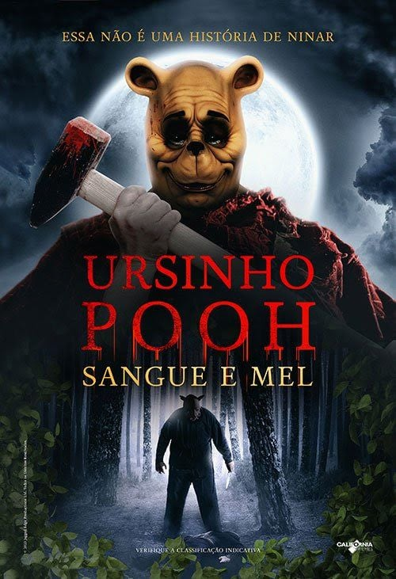

URSINHO POOH

SINOPSE
- Anos atrás, Christopher Robin fez amizade com Winnie‑the‑Pooh, Piglet e outros amigos no Bosque dos Cem Acres. Depois que Christopher os deixa para ir à faculdade, Pooh e Piglet são deixados sem sustento — a falta de alimento, o inverno rigoroso e o abandono fazem com que eles voltem aos seus instintos mais selvagens e violentos.